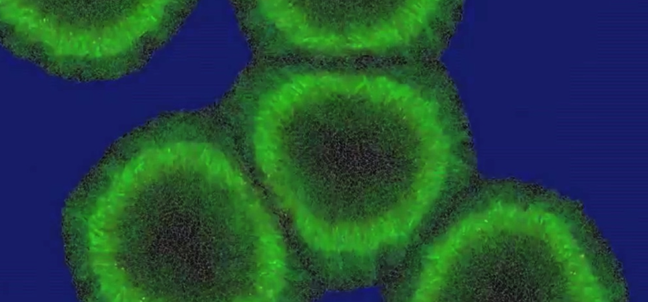
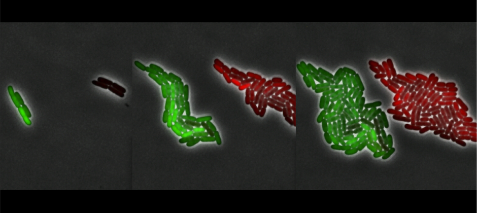
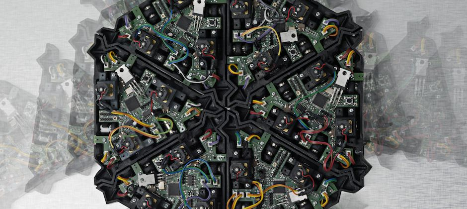

Multicellular
Design

Synthetic
State

Gene Circuit
Characterization

Protocols
as Code

Continuous
Culture

Self Organizing
Systems
About

Eric Klavins, Professor
The Klavins lab develops synthetic living systems, re-engineered organisms, and engineered parts for existing organisms. The emphasis is on designing gene circuits and cell-cell communication systems that enable novel multicellular behaviors in bacteria, yeast, and plants. Klavins is interested in the full stack from modeling and design to fabrication and testing of new living systems. His current projects include synthetic multicellular systems, machine-learning enabled protein engineering, and laboratory automation.
News
{% for n in site.data.news limit:9 %} {% include news.html n=n %} {% endfor %}Open Positions
We frequently have positions available for postdoctoral scholars, graduate students, staff members, and undergraduate assistants. See here for more information.
Contact Info
Address
- Klavins Lab
- University of Washington
- Campus Box 352500
- Seattle, WA 98195
Links
- UW BIOFAB
- Aquarium
- Electrical and Computer Engineering
- Computer Science and Engineering
- Bioengineering
- Center for Synthetic Biology
#klavinslab